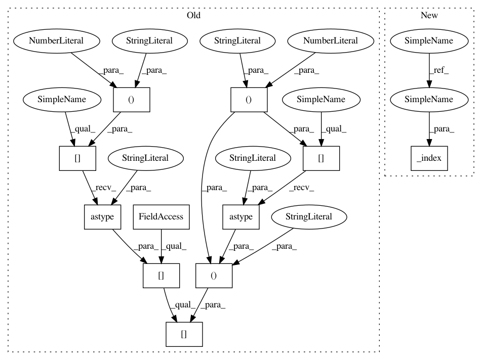

af286ba5280614ecc8371b71ed53cc6447d1183b,GPy/kern/src/static.py,Precomputed,Kdiag,#Precomputed#Any#,237
Before Change
return self.variance * self.fixed_K[X[:,0].astype("int")][:,X2[:,0].astype("int")]
def Kdiag(self, X):
return self.variance * self.fixed_K[X[:,0].astype("int")][:,X[:,0].astype("int")].diagonal()
def update_gradients_full(self, dL_dK, X, X2=None):
if X2 is None:
After Change
return self.variance * self._index(X, X2)
def Kdiag(self, X):
return self.variance * self._index(X,None).diagonal()
def update_gradients_full(self, dL_dK, X, X2=None):
self.variance.gradient = np.einsum("ij,ij", dL_dK, self._index(X, X2))
In pattern: SUPERPATTERN
Frequency: 4
Non-data size: 11
Instances
Project Name: SheffieldML/GPy
Commit Name: af286ba5280614ecc8371b71ed53cc6447d1183b
Time: 2016-04-22
Author: ibinbei@gmail.com
File Name: GPy/kern/src/static.py
Class Name: Precomputed
Method Name: Kdiag
Project Name: SheffieldML/GPy
Commit Name: af286ba5280614ecc8371b71ed53cc6447d1183b
Time: 2016-04-22
Author: ibinbei@gmail.com
File Name: GPy/kern/src/static.py
Class Name: Precomputed
Method Name: K
Project Name: SheffieldML/GPy
Commit Name: af286ba5280614ecc8371b71ed53cc6447d1183b
Time: 2016-04-22
Author: ibinbei@gmail.com
File Name: GPy/kern/src/static.py
Class Name: Precomputed
Method Name: update_gradients_diag
Project Name: SheffieldML/GPy
Commit Name: af286ba5280614ecc8371b71ed53cc6447d1183b
Time: 2016-04-22
Author: ibinbei@gmail.com
File Name: GPy/kern/src/static.py
Class Name: Precomputed
Method Name: update_gradients_full